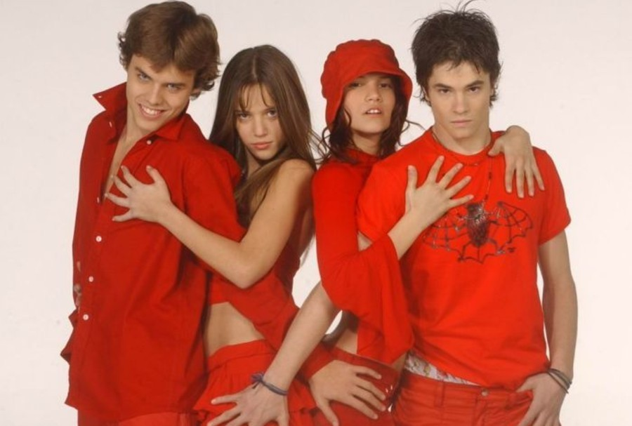
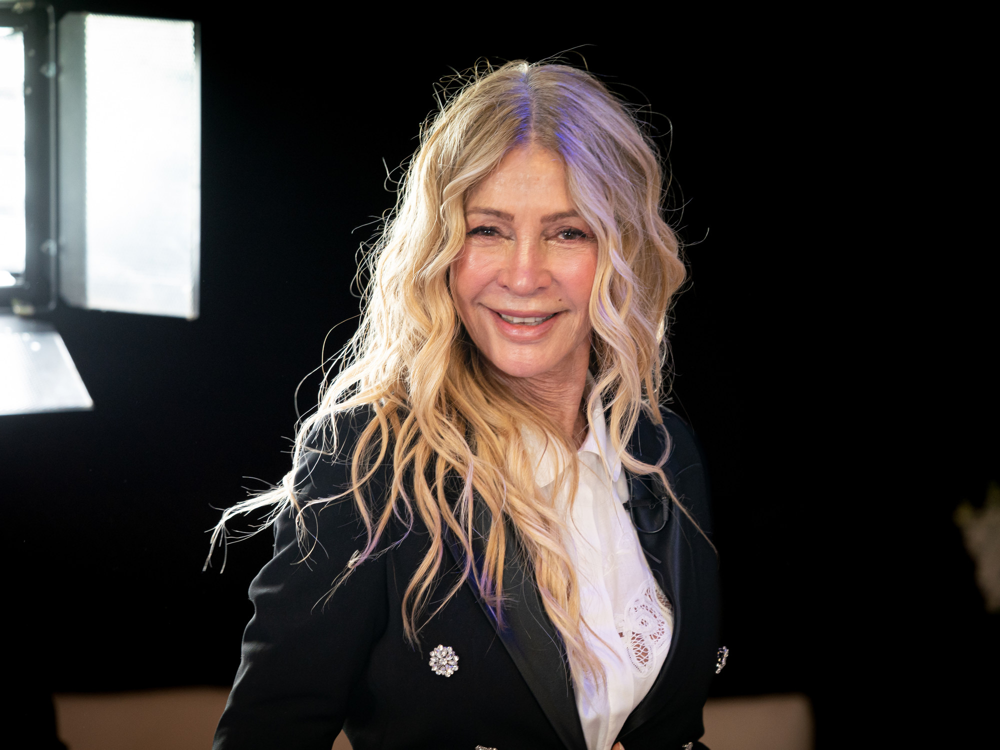

Cris morena
Cris morena es productora y directora
Creadora de series juveniles como Aliados, Amor Mio, Alama Pirata, y su mas reciente, Margarita
Sus series mas exitosas
Casi angeles

Rebelde way

Floricienta
¿Quien es Cris Morena?
Una pequeña biografia sobre el trabajo de una conocida productora Argentina
